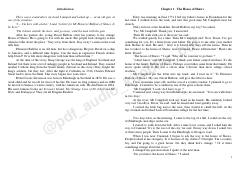

KYosh Devid Balfurning o'z merosi va hayoti uchun kurashi haqidagi klassik sarguzasht romani.
Ota-onasi vafotidan so'ng, yosh Devid Balfur o'zining merosxo'rlik huquqini talab qilish uchun amakisi Ebenezer yashaydigan Shaws uyiga yo'l oladi. Biroq, amakisi uni yo'q qilishga urinib, uni kemaga o'g'irlab ketishga majbur qiladi va Devid xavfli sarguzashtlar girdobiga tushib qoladi.